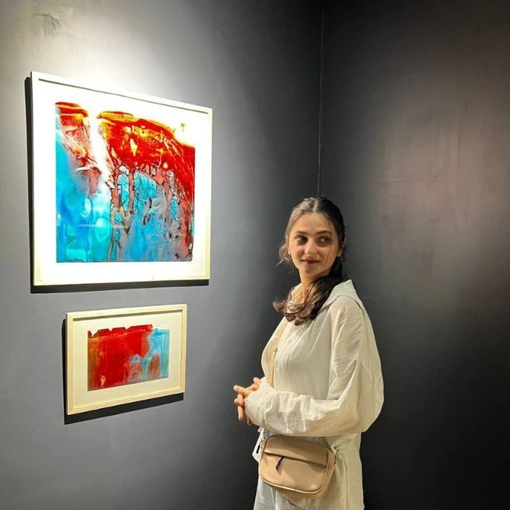

Clarity,from complexity.
Niloufar Mostajeran
Business & Product Analysis
I connect operational experience with analytical thinking to understand people, improve processes and explore better products.

The way I connect the dots
Three perspectives. One connected picture.Listen before deciding.
Working with customers, suppliers and colleagues taught me to look for the people behind a process.
Customer feedback · Negotiation · HR
01Selected academic work
Questions worththinking about.
Exploring the intersection of AI, human decisions and customer experience through academic research.
02Professional experience
Grounded inthe real world.
From customer conversations to organizational processes, my experience starts with how businesses actually work.
03A little about me
Always curious.Always learning.
I’m an Information Technology Management graduate student with a background in Industrial Management. My interests sit where business, technology and people meet.
I’m seeking opportunities in business analysis, product analysis or associate product management, especially in technology and AI.
English: professional proficiency, near-native
Education
The practical toolkit
Tools for the thinking.
A growing set of tools for organizing work, exploring data and making sense of complexity.
Courses & continuing learning
04Start a conversation
Let’s buildsomething useful.
Have a product or analyst opportunity in mind? I’d love to hear about it.
Say hello